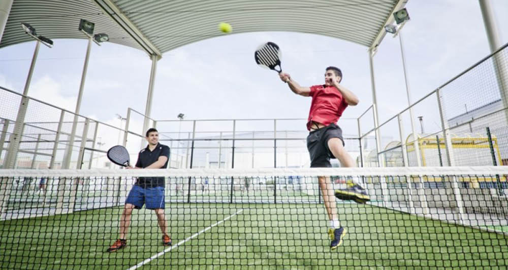

Padel is een dynamische racketsport die zijn oorsprong vindt in Mexico in de jaren 1960. Het spel combineert elementen van tennis en squash, waarbij twee teams van twee spelers het tegen elkaar opnemen op een rechthoekig veld, omringd door glazen wanden. De uitvinding van padel wordt toegeschreven aan Enrique Corcuera, een rijke Mexicaanse zakenman, die het spel bedacht als een recreatieve activiteit voor zijn familie en vrienden op zijn landgoed in Acapulco. Corcuera paste de regels van tennis en squash aan om een spel te creëren dat toegankelijk was voor mensen van alle leeftijden en vaardigheidsniveaus. Sindsdien heeft padel zich snel verspreid over de wereld en is het uitgegroeid tot een populaire sport met miljoenen beoefenaars, met speciale banen en competities in vele landen.
Als je overweegt om te beginnen met padel, zul je blij zijn te weten dat het een relatief toegankelijke sport is als het gaat om kosten. In vergelijking met sommige andere racket- of balsporten zijn de initiële kosten redelijk beheersbaar. Je kunt verwachten dat je investering begint met de aanschaf van een padelracket, dat variërend van enkele tientallen tot enkele honderden euro's kan kosten, afhankelijk van het merk en model. Daarnaast heb je padelballen nodig, die niet duur zijn. De toegang tot padelbanen kan variëren, maar er zijn meestal openbare en privéfaciliteiten beschikbaar, waarbij de prijzen per uur of lidmaatschap kunnen worden geregeld. Over het algemeen is padel een betaalbare sport om mee te beginnen, met de mogelijkheid om geleidelijk aan meer gespecialiseerde uitrusting aan te schaffen naarmate je vaardigheden en enthousiasme groeien.